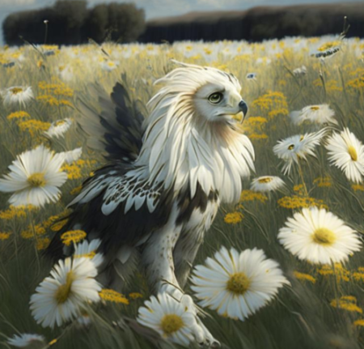
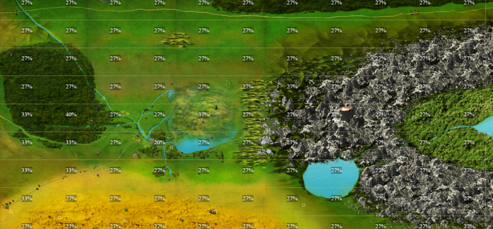

Многие игроки задаются вопросом о вероятности получения того или иного ресурса при убийстве монстров или исследовании местности в игре. Для шахт эта информация уже описана, настало время раскрыть точные значения и для “поверхностных” приключений.
Разберем не только шансы выпадения ресурсов, но и вероятности нападения монстров, и время на передвижение в разных локациях игры.
Части монстров
Шансы получения ресурсов с монстров могут зависеть как от типа монстров конкретного вида (разные минотавры), так и от их уровня (чем старше монстр, тем больше шанс).
- Кость скелета – 10%
- Скелет
- Скелет-стражник
- Скелет-лучник
- Скелет-маг
- Ноготь зомби – 20%
- Зомби
- Древний зомби
- Клык вампира – 7-15%
- Вампир – 7%
- Старший вампир – 10%
- Вампир-лорд – 12%
- Полуночный охотник – 12%
- Кровавый патриарх – 15%
- Паучий хитин – 3-4%
- Черный паук – 4%
- Паук-прядильщик – 3%
- Перо грифона – 10%
- Грифон
- Жало скорпиона – 10%
- Королевский скорпион
- Рог минотавра – 3-5%
- Минотавр – 3%
- Минотавр-страж – 3%
- Минотавр-берсерк – 3%
- Минотавр-шаман – 3%
- Минотавр-убийца – 3%
- Минотавр-лорд – 5%
- Слизь (кислотная и т.д.) – 2-4%
- Арканитовый пожиратель – 2, 3, 4% (до 65 уровня, 65-90 уровни, 90+ уровни)
- Ферритовый пожиратель- 2, 3, 4% (до 65 уровня, 65-90 уровни, 90+ уровни)
- Кислотный пожиратель- 2, 3, 4% (до 65 уровня, 65-90 уровни, 90+ уровни)
- Прах призрака – 3-7%
- Тень смерти – 3%
- Тень забвения – 3%
- Послушник тени – 3%
- Жрец тени – 3%
- Баньши – 7%
- Прочная шкура – 3-20%
- Йети – 7%
- Лютоволк – 3%
- Лютоволк Альфа – 20%
- Шестеренки големов по квесту Короткое замыкание – 10%
- Бронзовый голем
- Железный голем
- Золотой голем
- Мифрильный голем
- Снять шкуру при наличии ножа для снятия шкур (шансы складываются, если в бою несколько монстров):
- Волк – 4%
- Вепрь – 4%
- Матерый волк – 5%
- Медведь – 6%
- Грифон – 7%
- Йети – 10%
- Лютоволк – 4%
- Карнидон – 14%
- Горный грифон – 9%
- Пепельный волк – 5%
- Черный медведь – 7%
- Гир-о-заряды – (3+этаж_гирокуба/3.5)%
- Все гироголемы гирокуба
Дополнительно к этому списку есть еще несколько монстров, за победу над которыми дают различные ресурсы:
- Страж разлома
- Акварит – 3-5 штук
- Титанитовая руда – 3-5 штук
- Искристый уголь – 4-6 штук
- Руна 2 типа – 60%
- Руна 3 типа – 40%
- Выпадает только одна из рун
Шансы нападения монстров
После того, как мы рассмотрели шансы выпадения ресурсов с монстров, рассмотрим шансы нападения монстров на игрока.
- Комариная долина – 30%
- Долина серебрянки – 40%
- Серебряное озеро – 40%
- Великая топь – 70%
- Нордский лес – 80%
- Северные земли
- Суша – 12%
- Море – 3%
- Если установлены атакованные монстрами сети – 5%
- Остальные локации – 50%
Ресурсы на поверхности
Шансы получить тот или иной ресурс на поверхности может зависеть как от локации, так и типа самого ресурса. Вначале рассмотрим вероятности, которые не зависят от локации, затем локационные ресурсы.
- Кварц – 20%
- Мертвая пустыня
- Сено – 40%
- Пограничная степь
- Остывший вулканит – 8%
- Затерянная долина
- Шанс не увеличивается от событий, печати или профессии следопыт.
- Акварит – 3%
- Северные локации
Для всех остальных ресурсов действует общий шанс выпадения, в зависимости от локации сбора.

Время на перемещение по локациям
Зависит от типа клетки, по которой шагает игрок.
- Лес – 40 секунд
- Долина – 23 секунды
- Речки – 49 секунд
- Болото – 65 секунд
- Степь – 33 секунды
- Пустыня – 50 секунд
- Вода – 35 секунд
- Джунгли – 50 секунд
- Северные земли – 50 секунд
- Остальное – 40 секунд
Используя эту статью, следопыты и охотники могут выбирать наиболее комфортные для них места сбора частей монстров, шкур или наземных ресурсов, балансируя между шансами нападения, временем перемещения и составом монстров на локациях.